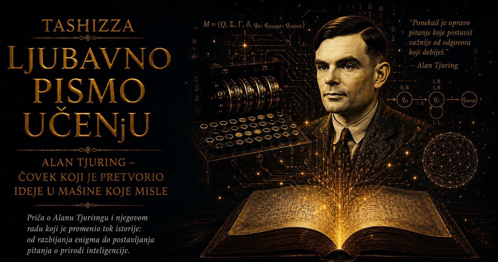

Ljubavno pismo učenju

Alan Matison Tjuring rođen je 23. juna 1912. godine u Londonu, u porodici čiji je život bio podeljen između Britanije i Indije, gde je njegov otac radio u kolonijalnoj državnoj službi. Alan i njegov stariji brat Džon veliki deo detinjstva provodili su kod porodičnih prijatelja i u internatima, udaljeni od roditelja tokom dugih razdoblja. Rano je razvio samostalnost koja je ponekad izgledala kao povučenost, kao i naviku da autoritet prihvata tek kada u njemu prepozna razumnu svrhu. Svet je posmatrao kao zbir obrazaca koji čekaju da budu otkriveni, pa su ga brojevi, mehanizmi i prirodne pojave privlačili snažnije od školskih pravila i društvenih očekivanja.
U školi Šerborn njegovo zanimanje za matematiku i prirodne nauke nije uvek nailazilo na razumevanje. Ustanova je visoko vrednovala klasično obrazovanje, disciplinu i pripremu za unapred određene društvene uloge, dok je Tjuring samostalno čitao složene naučne knjige, izvodio hemijske eksperimente i rešavao probleme na načine koji se nisu uklapali u propisanu nastavu. Nastavnici su prepoznavali njegovu darovitost, ali su ga istovremeno upozoravali da zanemaruje predmete koji su smatrani primerenijim uglednom obrazovanju. Već tada se pojavio obrazac koji će pratiti čitav njegov život: izuzetna sposobnost da prodre u srž problema i nestrpljenje prema pravilima čiju opravdanost nije mogao da vidi.
Presudan trag u njegovoj mladosti ostavilo je prijateljstvo sa Kristoferom Morkomom, školskim drugom sa kojim je delio ljubav prema nauci. U tom odnosu Tjuring je pronašao intelektualnu bliskost, divljenje i emotivnu nežnost koje je retko pokazivao pred drugima. Morkomova iznenadna smrt 1930. godine duboko ga je potresla i podstakla na dugotrajno razmišljanje o umu, materiji i mogućnosti da nešto od ljudske ličnosti nadživi telo. Tuga ga nije udaljila od nauke; učinila je da njegovo traganje za razumevanjem postane lično, gotovo egzistencijalno.
Na Kraljevskom koledžu u Kembridžu Tjuring je konačno ušao u sredinu u kojoj je njegova matematička originalnost mogla da se razvija. Bavio se teorijom verovatnoće, matematičkom logikom i pitanjem šta uopšte znači slediti strogo određen postupak. Izabran je za člana koledža, a rad o izračunljivim brojevima iz 1936. godine učinio ga je jednim od najvažnijih mladih logičara svog vremena. Zamišljena mašina sa trakom i konačnim pravilima proistekla je iz njegovog nastojanja da apstraktno pitanje prevede u krajnje jasan postupak, što je postalo prepoznatljivo obeležje njegove misli.
Doktorski rad završio je na Prinstonu kod Alonza Čerča, istražujući logiku i granice formalnog zaključivanja. Tamo je pored matematike učio i praktične veštine, radio sa električnim sklopovima i razmišljao o fizičkim uređajima koji bi mogli da izvršavaju simboličke postupke. Njegova radoznalost nikada se nije zadržavala unutar uredno povučenih akademskih granica. Dokaz, električno kolo, šifra, šahovski problem i hemijska reakcija za njega su predstavljali različite prilaze istom pitanju: kako iz jednostavnih pravila nastaje složeno ponašanje?
Po izbijanju Drugog svetskog rata priključio se britanskom centru za kriptoanalizu u Bletchley Parku, gde je radio u Baraci 8 na porukama nemačke mornaričke Enigme. Opstanak britanskih atlantskih konvoja zavisio je od mogućnosti da se prate nemačke podmornice, pa je brzina dešifrovanja imala neposredne posledice po živote ljudi i snabdevanje zemlje. Tjuring je u taj posao uneo sposobnost da ogroman broj mogućih ključeva pretvori u problem logičkog odbacivanja pogrešnih pretpostavki, razvijajući metode koje su povezivale matematiku, statistiku i poznavanje proceduralnih navika neprijateljskih operatera.
Priča o Enigmi obuhvata rad velikog broja ljudi u nekoliko zemalja. Poljski matematičari Marijan Rejevski, Ježi Ružicki i Henrik Zigalski ostvarili su pre rata presudne prodore, rekonstruisali delovanje mašine i saveznicima predali svoje rezultate. U Britaniji su Tjuringova zamisao bombe, dijagonalna tabla Gordona Velčmana, inženjerski rad Harolda Kina, doprinos Džoan Klark i drugih kriptoanalitičara, kao i svakodnevni rad operaterki i brojnih pomoćnih službi, činili jedinstven sistem. Tjuring je u toj zajednici zauzimao izuzetno važno mesto, ali njegova veličina ne zahteva mit o usamljenom geniju koji je sam razbio Enigmu.
Saradnici su ga pamtili kao originalnog, duhovitog i nekonvencionalnog čoveka, ponekad društveno nespretnog, ali sposobnog za duboku odanost i prijateljstvo. Malo je mario za činove, kancelarijske rituale i uglađene formulacije kojima se prikriva odsustvo dobrog razloga. Kada su nedostatak ljudi i mašina počeli da ugrožavaju rad Bletchley Parka, zajedno sa Gordonom Velčmanom, Hjui Aleksanderom i Stjuartom Milner-Berijem obratio se neposredno premijeru Vinstonu Čerčilu. Njegova povučenost nije podrazumevala pasivnost; pred preprekom koja je ugrožavala važan posao umeo je da zaobiđe hijerarhiju i zatraži jasnu odluku.
Anegdote iz ratnih godina sačuvale su ponešto od njegove neobične svakodnevice. Poznata je priča da je šolju lancem pričvrstio za radijator kako je kolege ne bi odnosile, kao i da je zbog polenske alergije vozio bicikl noseći gas-masku. Kada je lanac bicikla počeo da spada u približno pravilnim razmacima, pokušao je da izračuna odnos između okretanja točka i neispravnosti u mehanizmu. Takvi prizori otkrivaju čoveka koji je i u sitnoj neprijatnosti prepoznavao poziv da pronađe obrazac, umesto zbirke ekscentričnosti osmišljene radi izgradnje kasnijeg mita.
Među njegovim najbližim saradnicima bila je matematičarka Džoan Klark, čiju je izuzetnu sposobnost prepoznao u sredini u kojoj su žene često dobijale niži položaj i slabije priznanje od muških kolega. Njihovo prijateljstvo počivalo je na uzajamnom poštovanju, radu i poverenju, a jedno vreme bili su i vereni. Tjuring joj je govorio o svojoj homoseksualnosti, dok je ona prema njemu sačuvala privrženost i razumevanje. Veridbu je ipak raskinuo, svestan da brak zasnovan na društvenom očekivanju ne bi mogao da im pruži život koji su oboje zasluživali, a njihova bliskost nastavila se i posle te odluke.
Posle rata Tjuring je prešao u Nacionalnu fizičku laboratoriju, gde je razradio projekat elektronskog računara ACE sa programom smeštenim u memoriji. Njegova zamisao bila je tehnički smela, dok su institucionalna opreznost, ograničena sredstva i nepostojanje iskustva u izgradnji takvih uređaja usporavali realizaciju. Tjuring je teško podnosio sastanke i odlaganja kada bi mu tehničko rešenje već izgledalo jasno. Brzina njegovog mišljenja predstavljala je veliki dar, ali je ponekad otežavala strpljivo objašnjavanje puta kojim je stigao do zaključka.
Na Univerzitetu u Mančesteru radio je sa ranim elektronskim računarima, pisao programe i razmišljao o mašinama sposobnim za učenje. U radu „Računarske mašine i inteligencija” iz 1950. godine predložio je igru imitacije, kasnije poznatu kao Tjuringov test, kako bi raspravu o mašinskom mišljenju usmerio prema ponašanju koje se može posmatrati. Razmatrao je prigovore o svesti, originalnosti, emocijama i matematičkim ograničenjima, a posebnu pažnju posvetio je zamisli „dečje mašine” koju bi trebalo obrazovati umesto unapred snabdeti svakim mogućim odgovorom.
Njegova radoznalost zatim se okrenula biologiji. U radu „Hemijska osnova morfogeneze” iz 1952. godine matematički je istraživao kako reakcija i širenje hemijskih supstanci mogu iz gotovo jednoličnog početnog stanja stvoriti prostorne obrasce. Zanimalo ga je nastajanje pruga i pega, raspored listova i drugi oblici živih organizama. Računarske instrukcije, rotori Enigme i hemijski procesi pripadali su za njega istom intelektualnom predelu u kome jednostavne lokalne interakcije mogu proizvesti zadivljujuću složenost.
Tjuring je bio i izvanredan trkač na duge staze, sa rezultatima bliskim vrhunskim britanskim atletičarima svog vremena. Trčanje mu je pružalo ritam, samoću i neposrednu vezu između napora i pređenog puta, pa je velike udaljenosti ponekad prelazio trčeći i onda kada bi njegove kolege koristile prevoz. Telo je doživljavao kao izvor snage i slobode, zbog čega će kasnije državno zadiranje u njegovu telesnost imati posebno okrutnu težinu.
U Britaniji njegovog vremena homoseksualni odnosi među muškarcima bili su krivično delo. Kada je početkom 1952. godine prijavio provalu u kuću, policijska istraga okrenula se njegovom privatnom životu i vezi sa Arnoldom Marijem. Tjuring je govorio otvoreno, bez pokušaja da svoju intimnost predstavi kao sramotu, a država je čoveka koji je tražio zaštitu pretvorila u optuženika. Proglašen je krivim za „grubu nepristojnost” i dobio izbor između zatvora i uslovne kazne povezane sa hormonskim tretmanom.
Izabrao je tretman kako bi sačuvao mogućnost da radi, pa je približno godinu dana primao sintetički estrogen. Posledice su obuhvatile impotenciju i razvoj grudi, dok je osuda ugrozila njegov pristup poverljivim poslovima. Država je medicinu upotrebila kao sredstvo prinude, menjajući telo čoveka čiju je snagu, inteligenciju i ratni rad prethodno koristila. Sistem je homoseksualne ljude prisiljavao na tajnost, a zatim upravo tu nametnutu tajnost proglašavao bezbednosnim rizikom.
Ni posle suđenja Tjuring nije prestao da istražuje, putuje, piše prijateljima i razvija modele morfogeneze. Njegove poslednje godine ne mogu se pošteno svesti na jednostavnu sliku čoveka koji se u jednom trenutku potpuno slomio. Bol i poniženje postojali su zajedno sa radoznalošću, humorom, prkosom i planovima za budući rad. U ironičnom pismu pokazao je apsurd logike prema kojoj bi njegova homoseksualnost mogla da posluži kao razlog za odbacivanje njegovih ideja o mašinskoj inteligenciji.
U junu 1954. godine pronađen je mrtav u svojoj kući u Vilmslou, a kao uzrok smrti utvrđeno je trovanje cijanidom. Zvanična istraga zaključila je da je izvršio samoubistvo. Načeta jabuka pronađena pored kreveta kasnije je povezivana sa njegovom naklonošću prema filmu „Snežana i sedam patuljaka”, premda jabuka nije ispitana na cijanid, pa simbolična verzija poslednje noći nema pouzdanu dokaznu osnovu. Njegova majka verovala je da je smrt mogla biti nesreća tokom hemijskog eksperimenta, dok većina biografa prihvata zaključak istrage uz oprez prema detaljima koje je kasnija legenda pretvorila u izvesnost.
Imao je četrdeset jednu godinu. Za sobom je već ostavio radove koji su preoblikovali matematičku logiku, računarstvo, kriptoanalizu, razmišljanje o veštačkoj inteligenciji i matematičku biologiju. Mnoge njegove ratne zasluge ostale su skrivene zbog državne tajne, računari su tek izlazili iz eksperimentalnih laboratorija, a puni značaj njegovih bioloških modela tek je trebalo da bude prepoznat. Umro je pre nego što je svet postao sposoban da sagleda koliko su se daleko pružale njegove ideje.
Otvaranje arhiva omogućilo je kasnijim generacijama da Tjuringov doprinos sagledaju unutar velike međunarodne i kolektivne istorije. Britanska vlada se 2009. godine zvanično izvinila zbog postupanja prema njemu, dok je 2013. dobio posthumno kraljevsko pomilovanje. Kasniji zakon omogućio je pomilovanje velikog broja drugih muškaraca osuđenih prema nekadašnjim odredbama o homoseksualnim odnosima. Ipak, reč „pomilovanje” zadržava moralnu nelagodnost, jer Tjuringu nije bilo potrebno oproštenje zbog njegove ljubavi; društvu je bilo potrebno priznanje da je zakon bio nepravedan, a medicina zloupotrebljena.
Javno sećanje često ga prikazuje kao tragičnog genija koji je pomogao svojoj zemlji, a zatim stradao od njenih zakona. Takva slika nosi važnu istinu, ali lako zaklanja njegovu životnost. Bio je duhovit, tvrdoglav, fizički izdržljiv i emotivno odan, sposoban za bliskost, sklon samoći i povremeno težak ljudima koji nisu mogli da prate brzinu njegove misli. Voleo je bajke, duge trke, hemijske eksperimente, zagonetke i stvarne mašine koje se mogu otvoriti, ispitati i popraviti.
Njegov život spaja dve priče koje bi svaka civilizacija trebalo da pamti zajedno. Prva govori o hrabrosti uma koji pred nejasnoćom traži postupak, pred složenošću obrazac, a pred prividno beskrajnim brojem mogućnosti pravilo koje će ih urediti. Druga govori o društvu koje je umelo da prepozna nečiju inteligenciju, koristi njegov rad i poveri mu sopstvenu bezbednost, a zatim odbaci njegovu ljubav, telo i pravo na slobodan život. Alan Tjuring je pomogao svetu svojim umom; dostojanstvo mu je pripadalo i bez ijednog dokaza, mašine ili razbijene šifre.